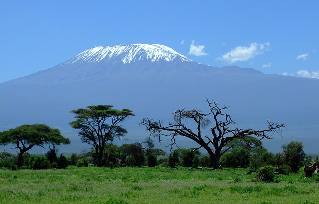

概况
乞力马扎罗山是地球上最大的火山之一,被称为“非洲屋脊”、“非洲之王”，其最著名的基博峰峰顶海拔为5895米，是非洲最高点。它位于坦桑尼亚的东北部，临近肯尼亚边界，占地约3885平方公里，北距东非大裂谷约80公里，南距赤道约322公里。 为了保护乞力马扎罗地区珍贵的动植物资源，坦桑尼亚当局于1968年设立了乞力马扎罗国家公园，该公园于1981年被联合国教科文组织列入《世界文化遗产保护名录》。
形成
乞力马扎罗是75万年前火山活动的结果。 约75万年前，东非大裂谷附近的火山爆发。由于地底的巨大压力，地壳抬升，形成了乞力马扎罗的第一座火山——希拉火山。约50万年前，希拉火山停止了活动，随之它的火山口崩塌。希拉停止活动后不久，马文济火山诞生。约46万年前，马文济峰西部的一次大规模喷发又形成了基博火山。
基博火山在10万年前曾大规模喷发，喷射出的岩浆蔓延到了基博、希拉的底部，形成了现在几座峰之间的所谓“山鞍”。随后的几次喷发在山体东南部和西北部制造出了一系列的小山丘和寄生火山口，比如基博峰最小的那一圈——伦斯火山口就是那个时候形成的（基博峰中间的那一圈——灰坑火山口直到200年前的才形成。
山体构成
乞力马扎罗的山体主要由3座主峰构成（见下图），马文济峰（Mawenzi）、基博峰(Kibo)和希拉岭(Shira Ridge)。
3座主峰（来源：climbmoutkilimanjaro）
基博峰
基博峰的峰顶是个保存较为完整的火山口，这个火山口非常平缓（哈利路亚！托这个特点的福，登山者们才能登顶）。基博峰是3座主峰里唯一一座峰顶永久积雪的山峰，也是三座主峰里唯一长得像火山口的，在这里顺便说一下，基博峰上有3个同心火山口，从里到外分别是：伦斯火山口（Reusch Crater）、灰坑火山口(Ash Pit)和基博火山口（Kibo Crater）……
基博火山口并不完美。首先，它的南部比其它部分高，乌呼鲁峰就在基博火山口稍高一点的南侧；其次，基博有个缺口，官方叫做西部缺口（Western Breach）（见下图）。
西部缺口（Westrn Breach）（来源：climbmoutkilimanjaro）
马文济峰
马文济峰是乞力马扎罗山中的第二高峰， 最高点是海拔5149米的汉斯.迈耶峰。从外观看，你完全不会觉得它是一座火山，因为它长得特别酷（见下图）！
由于太过于陡峭，马文济峰的峰顶并不像基博峰的峰顶那样终年积雪(陡到hold 不住雪！)；只有专业攀登者才被允许攀登马文济。

希拉岭
希拉岭是乞力马扎罗山最古老的一座火山，它也是最“mini”的一座火山,最高点只有3962米，位于山的西部。和马文济峰一样，希拉岭由于常年受到严重侵蚀，已经完全没有火山的样子了。
气候
乞力马扎罗山所在的地区位于热带，距离赤道只有322公里，那里全年高温：年平均最低气温在18摄氏度左右，平均最高气温在30摄氏度左右；那里并没有分明的四季，只有雨季和旱季。 所有庞大的山体都有着自己的气候，乞力马扎罗也不例外。作为非洲的屋脊，在乞力马扎罗上空盘踞的有两种信风：信风和反信风。这两种信风分别为乞力马扎罗山地区带来2个雨季和1个旱季。
信风: 3月到5月来自印度洋的东南信风为乞力马扎罗山带来了漫长、降水量大的一个雨季。因为信风来自于东南方向，所以为乞力马扎罗山的南坡带来了丰厚的降水；相比之下，北坡就没那么幸运了，由于大部分信风被山体阻挡，因此降水量少得可怜。第二场信风是东北信风，它通常在11月到次年的2月盘踞在乞力马扎罗上空。由于从东北方向来，穿越了大陆，带过来的水汽并不多，所以这场信风给乞力马扎罗山带来的是一个降水量少、持续时间短的雨季。这场信风为北坡带来了一些降水，但是由于它带来的水汽不多，降水量并不大。
反信风: 5月到10月间，反信风占领乞力马扎罗上空。反信风不夹杂水汽，并且很强。它的“来势汹汹”，直接把东南信风逼退到了海拔3000米以下，这个时间段海拔3000米以上几乎是没有降水的，这保证了乞力马扎罗山在5月到10月的干燥。
生态资源
坦桑尼亚有着丰富的动植物资源，作为一座海拔近6000米的高山，乞力马扎罗山的自然带有着随海拔变化而变化的特点， 而在不同的自然带栖息着不同的物种（详情见下表）。
自然带
物种
森林带
四线草鼠、蓝候、哥伦布候、橄榄狒狒、果子狸、豹、猫鼬、蜜獾、非洲食蚁兽、豪猪、丛猴等
荒野带及以上（5500米以下）
小型啮齿类动物如四线草鼠、鼹鼠等。
P. S.: 由于环境恶劣，海拔5500米以上就没有任何物种可以长期生存了
初次探索和登顶
- 第一个登顶尝试是在1861年8月，发起人是德国博物学家、男爵卡尔•克劳斯•冯•德德肯（Baron Carl Claus von der Decken）和英国地质学家理查德•桑顿（Richard Thornton）。虽然随行的挑夫有50余人，但出发仅仅3天后，他们就因为山上恶劣的天气被迫下山。他们抵达的最高高度是2460米。
- 第一次登顶成功是在1889年，由德国地质学教授汉斯迈耶（Hans Meyer）和他的好友路德维希.普尔柴勒（Herr Ludwig Purtsheller）完成；和他们同行的还包括当地酋长、挑夫等在内的另外15人。